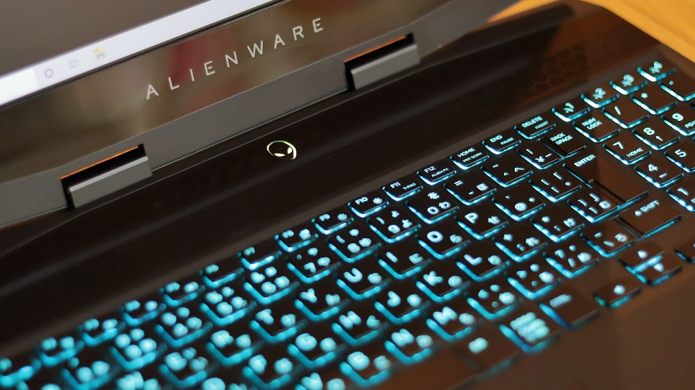

所有備品について
Dell ALIENWARE m15
2019年12月、映像編集用機材としてゲーミングノートPCを導入しました。Adobe Creative Cloud、フォントワークス mojimoを使用し映像編集を行っていく予定です。
スペック：Core i7-8750H・メモリ16GB・256GB SSD+1TB SSHD・GeForce GTX 1660Ti

Canon EOS Kiss M + EF-M18-150mm F3.5-6.3 IS STM
_a.png)
Canon EOS Kiss M2 + EF-M32mm F1.4 STM・EF-M15-45mm F3.5-6.3 IS STM
SONY HDR-CX680
Velbon EX-640 N
録音機材